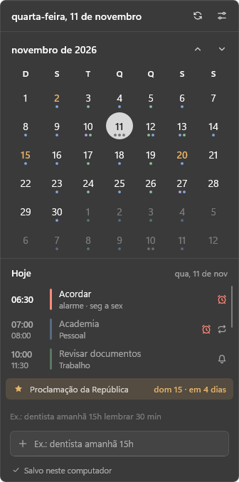
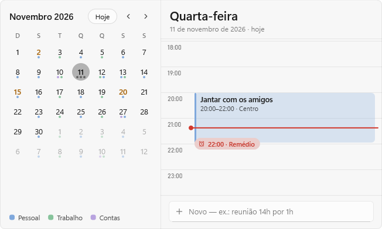

Para a área de trabalho do Windows
O calendário que fica
atrás das janelas.
Feriados do Brasil, do seu estado e da sua cidade, lembretes, alarmes e tarefas num programa leve, que mora no fundo da tela. O Google Agenda é opcional.


O que ele faz
- FeriadosNacionais, dos 27 estados e os da sua cidade, além de pontos facultativos.
- Lembretes e alarmesAvisos no estilo do Windows, alarme que toca até você parar e despertadores.
- Escreva do seu jeito“dentista amanhã 15h lembrar 30 min” vira um compromisso.
- Cinco modelosClaro, escuro ou igual ao Windows, com a cor de destaque que você quiser.
- LeveFeito em C++ direto no Windows: uns 20 MB de memória e nada de processador parado.
- Funciona sem contaTudo fica salvo no seu computador. Entrar no Google é opcional.
Google Agenda e Google Tasks
Se você entrar com a sua conta, os compromissos e as tarefas do Google aparecem no calendário, e o que você cria ou muda nele vai para lá. O programa conversa direto com o Google a partir do seu computador: não existe servidor nosso no meio, e ninguém além de você vê os seus dados. Os detalhes estão na política de privacidade.
Feito para uso pessoal e de amigos. Não há download público.